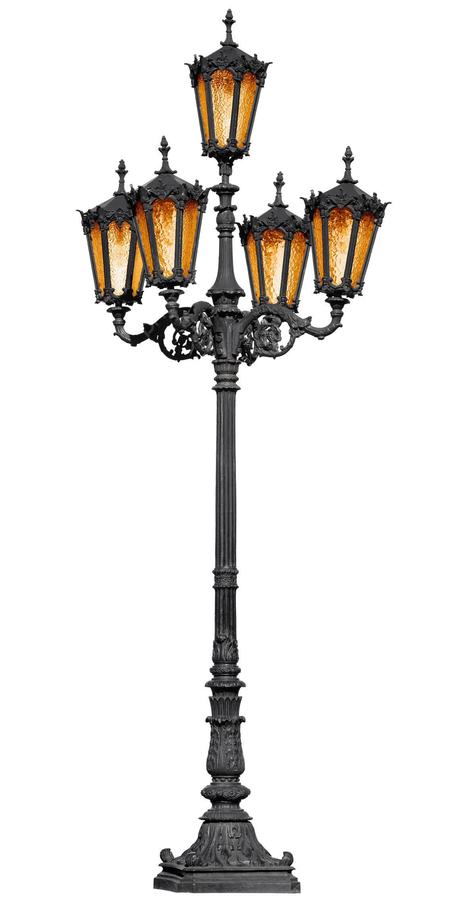

Hola lector, el poste de las de ideas se ha acabadp, necesita
de tomar un descanso e iniciar nuevos propósitos y proyectos para esta página,
Voces desde el polvo , pero también tú puedes participar
en aportar material para la misma y evitar que esta página quede
en el olvido. Al final de este, quedará un link que llevara a un servidor externo,
para aportar el material que se haya recopilado al fin de cada mes y se subirá a los principios
del nuevo.